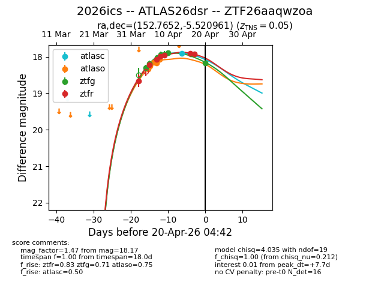
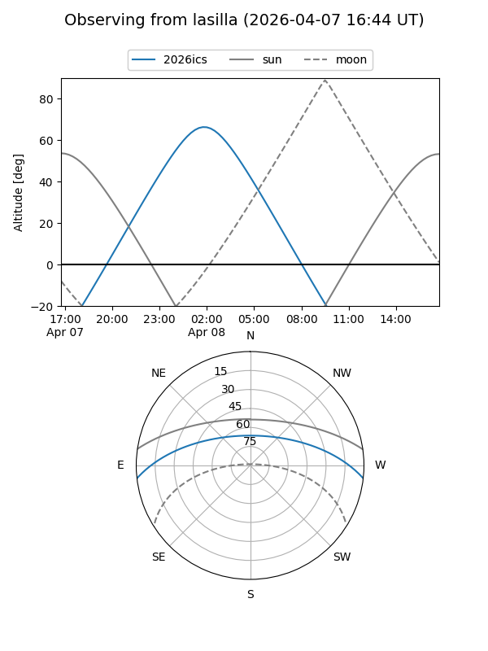
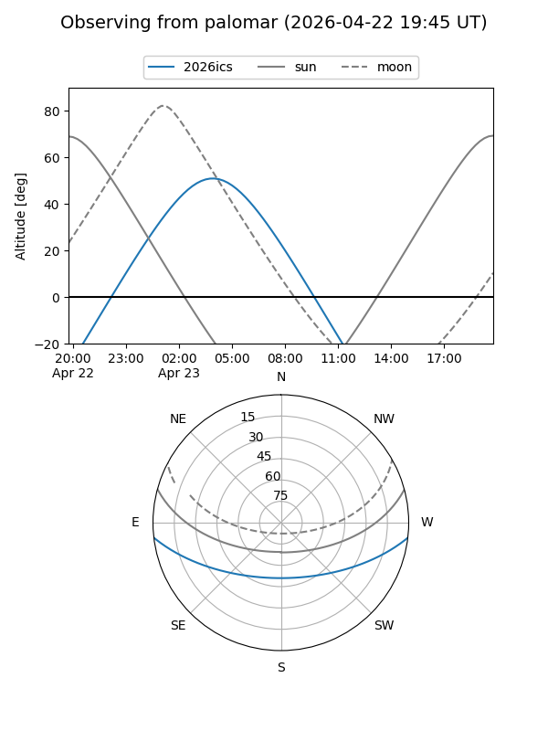
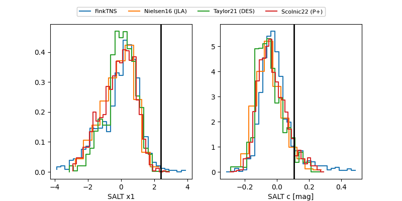

2026ics
Target 2026ics at 2026-04-20 04:52
Aliases and brokers:
FINK: link
Lasair: link
ALeRCE: link
TNS: link
YSE: link
alt names
ZTF26aaqwzoa (ztf,fink_ztf)
2026ics (tns,yse)
ATLAS26dsr (atlas)
Coordinates:
equatorial (ra, dec) = 152.7652,-5.52096
equatorial (HMS+DMS) = 10:11:03.65,-05:31:15.46
galactic (l, b) = (246.9582,+39.33102)
Flags:
confirmed ia
Photometry:
last atlasc=17.90, atlaso=18.08, ztfg=18.17, ztfr=17.93
1 atlasc, 5 atlaso, 8 ztfg, 7 ztfr detections
Lightcurve

Visibility


Additional plots
